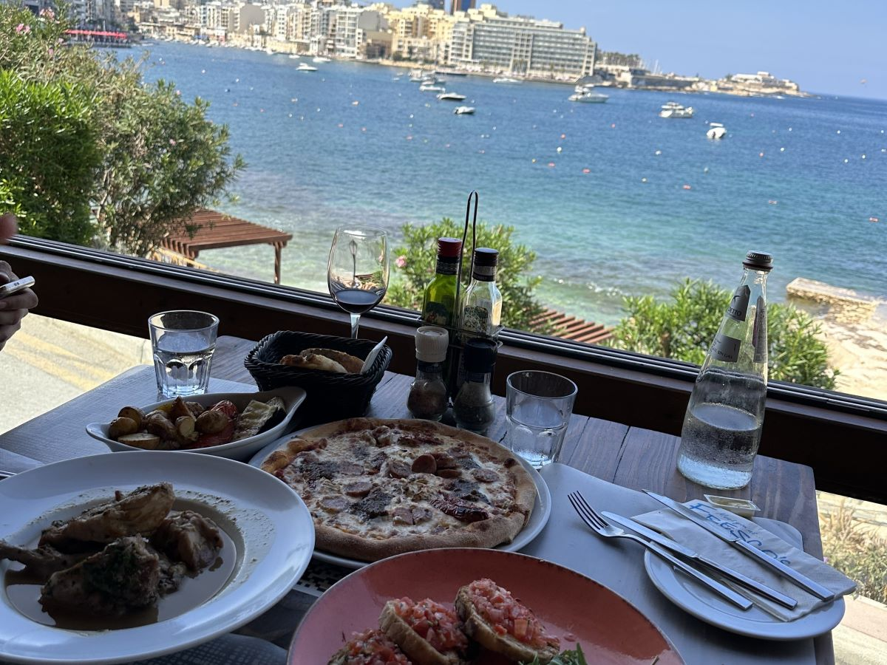

マルタってどんな国？
マルタの歴史
小さな島国で面積は東京都23区の総面積より小さく 様々な国に支配されてきた背景があり歴史豊かな国です。
マルタの位置
イタリアシチリア島の南に位置し、アフリカ諸国とも近いです。イタリアの首都ローマへは飛行機で1時間ほどで行くことができます。

マルタ料理
シーフード料理、ウサギ料理、ヤギのチーズなどが有名です。イタリアンが多いですが、アフリカ諸国からも近く、いろんな国の料理が楽しめます。